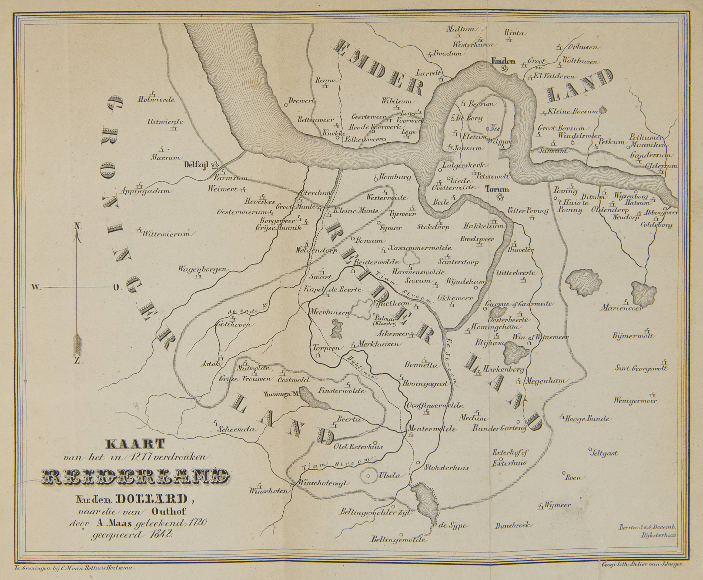

السؤال المركزي
ماذا يبقى من مكان عندما تختفي قراه وكنائسه وطرقه من سطح الأرض، لكن تبقى أسماؤه وخرائطه وأساطيره في الذاكرة؟ وكيف يحوّل فيلم معاصر هذه الذاكرة إلى مغامرة دون أن تختلط الأسطورة بالتاريخ؟
ملف حي يفصل بين تاريخ Reiderland / Rheiderland الموثق، ذاكرة القرى التي ابتلعها خليج Dollard، أساطير الغرور والأجراس والكنوز، وبين الخيال السينمائي لفيلم Reiderland. لا يُعامل التشابه كدليل: كل طبقة تحمل درجتها الخاصة من الثقة.
بحث حيهولندا × ألمانيافيلم قيد الإنتاجذاكرة مكانهذه العقدة تدرس Reiderland وهو ما يزال قيد الصناعة. لذلك لا يظهر الفيلم هنا كعنوان خارجي أو هامش ثقافي، بل كجزء من البحث نفسه: من يكتبه؟ من يصنع صورته؟ من يجسّد ذاكرته؟ وكيف تتحول أبحاث التاريخ والأسطورة إلى قرارات سينمائية أمام الكاميرا؟ الموقع الرسمي يعرّف التوأم Henk وThomas Hiensch ككاتبي السيناريو والمخرجين، ويصفهما كصانعي أفلام وحكواتيين لهما اهتمام فعلي بالبحث التاريخي والأساطير. هذا يجعل الحوار بين Reiderland وLuxDot حواراً بين مشروعين يستخدمان البحث والذاكرة بوسيطين مختلفين.
شريك في كتابة السيناريو والإخراج. ينحدر المشروع من ارتباط عائلي بفريزلاند ومن اهتمام بالتاريخ والفن والحكاية.
شريك Henk في الكتابة والإخراج. يصف الموقع عمل الأخوين بأنه صناعة أفلام تعاونية تنمو عبر العلاقات المحلية والمشاركة.
الحكواتي الذي يجسّد البروفيسور المتعاطف صاحب المعرفة السابقة بكنوز Magna Frisia. له عقدة مستقلة داخل LuxDot، وهنا يصبح صلة مباشرة بين عالم الحكاية والبحث والفيلم.
اختير في 2026 لتجسيد Poppo؛ وبذلك يلتقي الشخص التاريخي الذي نبحثه مع صورته السينمائية الحديثة في نقطة واحدة قابلة للتتبع.
وجود الأشخاص هنا توثيق لدورهم العام المنشور في المشروع، وليس افتراضاً لمواقفهم الشخصية أو تفسيراً لنواياهم.
ماذا يبقى من مكان عندما تختفي قراه وكنائسه وطرقه من سطح الأرض، لكن تبقى أسماؤه وخرائطه وأساطيره في الذاكرة؟ وكيف يحوّل فيلم معاصر هذه الذاكرة إلى مغامرة دون أن تختلط الأسطورة بالتاريخ؟
الموثق أولاً. وجود قصة عن كنز أو لعنة أو تاج لا يثبتها. لكن وجود القصة نفسها، وتاريخ انتقالها، وموقعها داخل ذاكرة المجتمع، كلها حقائق بحثية قابلة للتوثيق.
Reiderland كان اسماً لمنطقة تاريخية فريزية على جانبي الحدود الحالية بين شمال شرق خرونينغن وشرق فريزيا. منذ أواخر العصور الوسطى تغيرت المنطقة جذرياً بفعل اختراق البحر وتوسع Dollard. المصادر الإقليمية الحديثة تشدد على أن الغرق لم يكن حادثة واحدة بسيطة، بل سلسلة فيضانات وخسارة تدريجية للأرض، مع ضربة كبرى سنة 1509 ثم قرون من استصلاح الأراضي.

المصادر المحلية تتحدث عن عشرات المستوطنات التي فقدت أو هجرت. بعض القوائم القديمة تضخم العدد أو تكرر أسماءً غير مؤكدة، لذلك يعتمد الملف على تمييز القرية المثبتة من الاسم المتناقل. Reiderwolde تحتل مكانة خاصة في الذاكرة وفي الفيلم.
تظهر في الفولكلور روايات عن ثراء مفرط وغرور، وعن أجراس يمكن سماعها من الأعماق، وعن كائن بحري/امرأة بحرية تلعن المكان في بعض النسخ. هذه طبقة ذاكرة شعبية وليست تفسيراً جيولوجياً أو تاريخياً للغرق.
Poppo/Bubo شخصية مرتبطة بالمقاومة الفريزية للفرنجة، وقُتل في معركة Boorne سنة 734 بحسب التقليد التاريخي الفرنجي اللاحق. استخدام لقب «ملك» أو ربطه بتاج Reiderland يحتاج تمييزاً: الفيلم يبني من الشخصية التاريخية خطاً مغامراتياً خاصاً به.
البحث عن أثر يقود إلى تاج Poppo المفقود، مع Rozemarijn وRinse وKinding وخصوم يسابقونهم إلى الاكتشاف. تظهر عناصر أثرية وصور فنية مفاهيمية: خنجر، علامات، خرائط، قبر ملكي، هيكل عظمي، وسيف من خط 1412.
لأنه ليس فقط «مادة ثقافية» عن ماضٍ غارق؛ إنما هو أيضاً صناعة ذاكرة جديدة الآن. اختيار مواقع التصوير، تصميم الآثار، استشارة المختصين، اختيار Poppo وشكل Reiderwolde كلها قرارات تعيد تشكيل الطريقة التي سيتخيل بها الجمهور التاريخ لاحقاً.
تُربط هذه العقدة مباشرةً بـ كيس فان وانرووي لأنه يؤدي دور Professor Puttkamer، وبعقدة الذاكرة الحية لأن المشروع يعيد بناء ذاكرة مكان مفقود، وبـ رحلات المعرفة لأن الحبكة نفسها تتحرك عبر الخرائط والبحث والآثار. الرابط مع أبحاث LuxDot الأخرى يُسجل كـ تقاطع موضوعي قابل للمقارنة لا كبرهان على أن الفيلم يكشف حقيقة خفية.
بدلاً من التعامل مع «33 قرية» كرقم أسطوري ثابت، يفصل LuxDot بين الأسماء التي تظهر في السجلات الكنسية والخرائط والقوائم التاريخية. القائمة التالية هي نواة أطلس قابل للتوسع وليست حكماً نهائياً على مواقع كل قرية.
| المكان | ما نعرفه | الطبقة | حالة البحث |
|---|---|---|---|
| Oosterreide | مذكورة بصيغ تاريخية منذ القرن 13، واستمرت آثار الاستيطان/الرعية إلى القرن 16. | سجل كنسيخرائط | A/B |
| Westerreide | قرية ورعية؛ بقيت كنيستها مدة طويلة، وما تزال Punt van Reide تحفظ جزءاً من المشهد القديم. | أثر مكانيرعية | A |
| Reiderwolde | مركز بارز في الذاكرة التقليدية؛ تُنسب إليه كنيسة/مؤسسة كنسية، وتعلقت به لاحقاً قصة امرأة البحر واللعنة. | تاريخفولكلور | B/C |
| Torum | يظهر كموضع سوق في الروايات؛ ارتبط تقليدياً بثمانية صاغة ذهب، وهي معلومة تحتاج قراءة نقدية. | اقتصادتقليد | B/C |
| Palmar | دير Premonstratenzer مفقود ضمن المشهد الذي ابتلعه Dollard. | ديردين | B |
| Fletum / Wilgum / Berum | أسماء متكررة في قوائم القرى الغارقة؛ تحتاج كل واحدة إلى ملف موضع مستقل ومقارنة صيغ الاسم. | قائمة تاريخية | B |
| Ulsda / Megenham / Tijsweer / Zwaag | جزء من شبكة الاستيطان القديمة في نطاق Reiderland/Dollard؛ بعض المواقع أعيد تفسيرها عبر الاستصلاح. | جغرافيا تاريخية | B |
مبدأ العمل: الاسم القديم ≠ إحداثية مؤكدة. لا يوضع دبوس نهائي قبل مقارنة الخرائط القديمة بالسجل الأثري والطبوغرافي الحديث.
الصورة الأثرية والتاريخية الحالية لا تؤيد قصة غرق كامل Reiderland سنة 1277 في ليلة واحدة. خرائط لاحقة كرست هذا التاريخ، لكن الاستيطان استمر في مواضع إلى القرن الخامس عشر والسادس عشر. توسع البحر حدث على مراحل، وكانت فيضانات العصور الوسطى المتأخرة ثم كارثة 1509 نقطة حاسمة.
خريطة Jacob Vermeersch سنة 1574 كانت من أوائل الخرائط التي صورت قصة Reiderland الغارقة، ثم أعادت خرائط لاحقة إنتاج الرواية. هذه نقطة بحث مهمة: الخريطة ليست فقط شاهداً على المكان؛ أحياناً تصبح آلة لصناعة الذاكرة نفسها.
حكاية شعبية متأخرة عن كائن بحري يُؤسر ثم يلعن Reiderwolde بالزوال. تحفظ خوف المجتمع من البحر، لكنها ليست تفسيراً تاريخياً للفيضانات.
الروايات القديمة ضخمت ثراء المنطقة: نساء بحلي ذهبية ضخمة، صاغة في Torum، وبيوت حجرية كثيرة. قيمتها الأساسية هنا أنها تكشف كيف تحولت خسارة أرض زراعية مزدهرة إلى صورة «مملكة غنية ضائعة».
تنتمي إلى نمط أوروبي أوسع من حكايات المدن والكنائس الغارقة. تسجل كذاكرة شعبية، لا كدليل على بقاء برج أو جرس في موضع محدد.
عنصر سينمائي. Poppo له نواة تاريخية، أما التاج المفقود ومسار البحث عنه فيعاملان كحبكة الفيلم إلى أن يظهر دليل مستقل.
هذه ليست قصة قرى فقط. قوائم المنطقة تتضمن رعايا وكنائس وأديرة، وبعض الكنائس نُقلت مع انحسار الأمان نحو أرض أعلى. بذلك يصبح Dollard أرشيفاً لدراسة العلاقة بين الماء والمقدس والذاكرة: حين تنتقل الجماعة، قد ينتقل اسم القرية والكنيسة معها بينما يبقى المدفن أو موضع العبادة القديم تحت الطين.
Westerreide: كنيسة ورعية قاومتا التراجع زمناً أطول من أجزاء أخرى.
Reiderwolde: ترتبط الذاكرة بمؤسسة كنسية/kapittel.
Palmar: دير مفقود داخل المجال المتحول.
Bellingwolde وBlijham: أمثلة مفيدة على تحرك الاستيطان والكنائس إلى مواضع أكثر أمناً.
يفصل البحث بين ثلاث طبقات: (1) Poppo/Bubo كشخصية فريزية في سياق الصراع مع الفرنجة؛ (2) معركة Boorne سنة 734؛ (3) إعادة بناء الفيلم له كملك ذي قبر وتاج قابلين لأن يصبحا محور مغامرة. هذه الطبقات لا تُدمج في ادعاء واحد.
الموقع الرسمي: آخر تعديل أغسطس 2026
الحالة: نشط · أغسطس 2026. نتعامل مع إنتاج Reiderland نفسه كحدث تاريخي جارٍ. كل تحديث جديد يُسجل بتاريخ نشره وتاريخ التصوير إن اختلفا، ومكانه، والشخصيات الظاهرة، وما إذا كان يكشف معلومة جديدة عن الحبكة.
لا نستنتج من موقع تصوير أن الحدث التاريخي وقع في الموقع نفسه. موقع الإنتاج وموقع الحدث داخل القصة وموقع الحدث التاريخي ثلاث طبقات منفصلة.
قرية تختفي مادياً لكن اسمها يبقى في النص والخريطة والأسطورة.
مصادر متأخرة تعيد رواية أحداث أقدم؛ مهمة البحث فصل الإشارة التاريخية عن التضخيم اللاحق.
الفيلم يحول الأرشيف والخريطة والأثر إلى حركة في المكان؛ LuxDot يستطيع تتبع المسار الحقيقي الموازي.
حين يشاهد آلاف الناس Poppo وReiderland عبر الفيلم، ستصبح الصورة السينمائية نفسها طبقة جديدة من ذاكرة المنطقة.
المرحلة التالية داخل هذه العقدة محددة مسبقاً: بناء سجل لكل قرية غارقة، مقارنة خرائط 1574 و1630 و1722 و1837، تتبع الكنائس والأديرة، إنشاء طبقة أثرية لـPunt van Reide، ثم مطابقة مواقع تصوير الفيلم مع الجغرافيا التاريخية من دون الخلط بينهما. كل نتيجة جديدة ترفع أو تخفض درجة الثقة.
أهلاً بكم داخل البحث.
LuxDot لا يدّعي امتلاك «حل» لأسطورة Reiderland، ولا يحوّل حبكة الفيلم إلى حقيقة تاريخية. سبب وجود الفيلم هنا هو العكس تماماً: أنتم تصنعون الآن طبقة جديدة من ذاكرة هذه الأرض. لذلك نوثق المصادر التي استندت إليها المنطقة والأسطورة، ونراقب كيف يعيد الفيلم تركيبها، ونترك الأسئلة مفتوحة حيث لا توجد أدلة كافية.
التقاطع الذي أثار فضولنا ليس دليلاً على سر خفي؛ إنه دعوة للمقارنة: الأرض المفقودة، الذاكرة، الخرائط، الأثر، الحكاية، والبحث عن إشارة داخل طبقات من التشويش. هذه الصفحة ستبقى حية طوال فترة صناعة الفيلم، مع تصحيح أي معلومة جديدة عند ظهور مصدر أفضل.
آخر مراجعة بحثية وتحريرية: 18 أغسطس 2026 · v4.3.68 · AR/EN/NL EDITORIAL PARITY. هذه الصفحة مصممة لتتحدث مع كل إعلان تصوير أو مادة أرشيفية/أثرية جديدة.